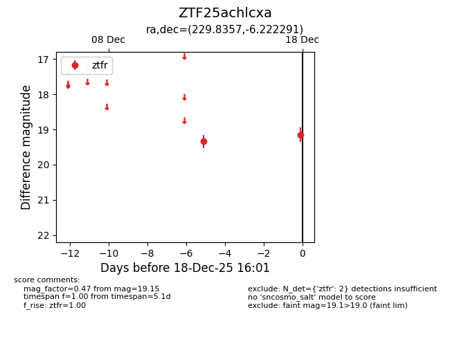
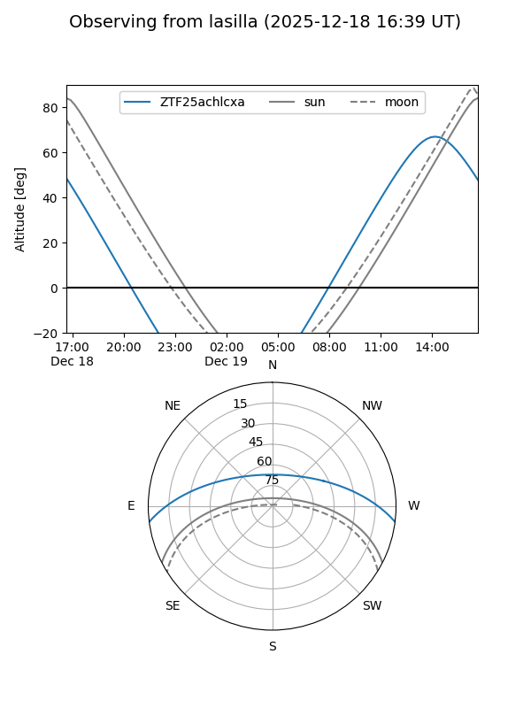
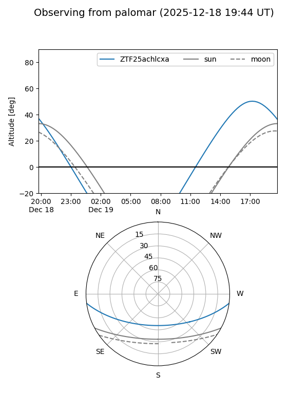

ZTF25achlcxa
Target ZTF25achlcxa at 2025-12-18 16:02
Aliases and brokers:
FINK: fink-portal.org/ZTF25achlcxa
Lasair: lasair-ztf.lsst.ac.uk/objects/ZTF25achlcxa
ALeRCE: alerce.online/object/ZTF25achlcxa
alt names
ZTF25achlcxa (ztf,fink_ztf)
Coordinates:
equatorial (ra, dec) = 229.8357,-6.22229
equatorial (HMS+DMS) = 15:19:20.56,-06:13:20.25
galactic (l, b) = (355.4452,+41.10094)
Photometry
last ztfr=19.15
2 ztfr detections
Lightcurve

Visibility


Additional plots